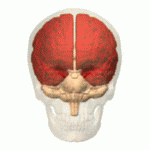
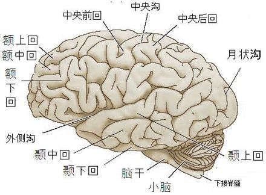

大腦藍圖
端腦有左右兩個大腦半球（端腦半球）。將兩個半球隔開的是稱為大腦縱隔的溝壑，兩個半球除了腦梁與透明中隔相連以外完全左右分開。半球表面布滿腦溝，溝與溝之間所夾細長的部分稱為腦回。腦溝並非是在腦的成長過程中隨意形成，什麼形態出現在何處都完全有規律（其深度和彎曲度因人稍有差異）。
腦溝與腦回的形態基本左右半球對稱，是對腦進行分葉和定位的重要標誌。有關大腦兩半球功能單側化的研究表明，大多數人的言語活動中樞在大腦左半球。比較重要的腦溝有外側溝（lateral sulcus），起於半球下面，行向後上方；至上外側面─中央溝（central sulcus）起於半球上綠中點稍後方，斜向前下方；下端與外側溝隔─腦回，上端延伸至半球內側面；頂枕溝（parietooccipital sulcus）位於半球內側面後部，自下向上。在外側溝上方和中央溝以前的部分為額葉；外側溝以下的部分為顳葉；枕葉位於半球後部，其前界在內側面為頂枕溝，在上外側面的界限是自頂枕溝至枕前切跡（在枕葉後端前方約4cm處）的連線；頂葉為外側溝上方、中央溝後方、枕葉以前的部分；島葉呈三角形島狀，位於外側溝深面，被額、頂、顳葉所掩蓋，與其他部分不同布滿細小的淺溝（非腦溝）。
左右大腦半球有各自的稱為側腦室的腔隙。側腦室與間腦的第三腦室，以及小腦和延腦及腦橋之間的第四腦室之間有孔道連通。腦室中的脈絡叢產生腦的液體稱為腦脊液。腦脊液在各腦室與蛛網膜下腔之間循環，如果腦室的通道阻塞，腦室中的腦脊液積多，將形成腦積水。
廣義的大腦的腦神經包含端腦出發的「嗅神經」，以及間腦出發的「視神經」。
大腦的斷面分為「白質」與「灰白質」。端腦的灰白質是指表層的數厘米厚的稱為大腦皮質的一層，大腦皮質是神經細胞聚集的部分，具有六層的構造，含有複雜的迴路是思考等活動的中樞。而相對大腦皮質白質又稱為大腦髓質。
間腦由丘腦與下丘腦構成。丘腦與大腦皮質，腦幹，小腦，脊髓等聯絡，負責感覺的中繼，控制運動等。下丘腦與保持身體恆常性，控制自律神經系統，感情等相關。
人的大腦

大腦表面的溝回
額葉（Frontal lobe）
額葉(Frontal lobe)位於腦的前半部分，在頂葉前方、顳葉上方，是大腦皮質(cerebral cortex)中四個主要腦葉之一，也是腦葉中最大的，通常也被認為是四個分葉之首。在Brodmann’s areas中，額葉裏分有主要運動皮質、前運動皮質、輔助運動區、額葉眼動區、背外側前額葉皮質、額極區、額眶區、語言運動區、上外額葉皮質、下額葉皮質、膝下皮質、上前扣帶皮質、下前扣帶皮質等。
額葉主要分為前額葉和後額葉，前後額葉亦可再細分為左右兩區域。前額葉中覆蓋着前額葉皮質(Prefrontal cortex)，是額葉中其中一個最重要的區域，前額葉皮質最主要的兩個部分為背外側前額葉皮質（Dorsolateral Prefrontal Cortex）和眼眶額葉皮質（Orbital Frontal Cortex）。背外側前額葉皮質負責認知功能，解決問題、分析事情以及執行的能力，能夠配合過去的記憶或經驗以決定我們該進行何種行為；眼眶額葉皮質則控制人的衝動、強迫意念以及各種慾望，它也可以調節杏仁核(Amygdala)引發的害怕反應(人的恐懼)。而後額葉則主要有主要運動皮質(Primary motor cortex)、前運動皮質(Premotor cortex) 和輔助運動區(Supplementary motor area /Secondary Motor Cortex)，顧名思義，它和運動相關(產生動作和修正動作等)，也與言語，學習模仿等有關。
額葉整體主要負責擬定計畫、組織、問題解決、選擇性注意力、短期記憶、概念的形成、人格、衝動和慾望的控制以及一些有關行為與情緒的高階認知功能。能影響人之判斷、決策、思考、推理、人格、動機及意志，
額葉可以說是腦中最重要的地方，如果活動不好或受損，可能會導致注意力無法集中、無法控制衝動、情緒無法正常感知。和額葉功能有關的病症有很多，如憂鬱症、焦慮症、精神分裂症、專注力失調過度活躍症、腦退化症、失語症、自閉症、額葉症候群和學者症候群等。
頭頂葉（Parietal Lobe）
頭頂葉（Parietal lobe），又簡稱頂葉，係為各類感覺訊息（包括痛覺、觸覺等）的中樞處理系統，同時也和語言、記憶等功能有關。而頂葉又可細分為左頂葉及右頂葉兩個部分，其掌管的功能也有些微的差異。左頂葉主管人的體覺功能，偌多加訓練及開發，將會增強一個人的操作能力，亦即，在為某些較為精密的動作時，因為肢體動作協調，故能提高操作的精準度；而右頂葉主管人的協調律動力與感官接觸分面，故此部分發達者會喜歡戶外活動，與人有肢體接觸等感官刺激的互動，學習上面若是用實際碰觸的方式來吸取新知的話，會較容易機收達到目標。
頭頂葉受損的疾病，一般統稱「頂葉症候群」Occipital lobe syndrome，簡單來說就是感覺出現障礙。以下為造成的病因，以及臨床案例：
| 外傷 | 腫瘤 | 血管病變 | |
|---|---|---|---|
| 病因 | 顱腦外傷尤其是頂部骨折，常引起急性頂葉損害，出現「意識障礙」 | 頂葉腫瘤可出現結構性運用不能。若腫瘤刺激到前庭可出現眼球震顫 | 大腦「動脈」病變時可能出現頂葉症狀群、誤寫、誤讀和綜合症。 |
| 臨床案例 |
|
||
電影-心中的小星星
電影描述一個天生有閱讀障礙的孩子─伊翔。因此被人認為他是個不愛學習的孩子，連簡單的英文字母、數字都學不會，寫的字也總是歪七扭八，運動神經也很不發達，跟同伴玩球時都會故意用球打破鄰居家的玻璃；不會扣鈕釦、打蝴蝶結……..。大家對他的評語總是不乖、不聰明、不聽話、不努力…。
其實正因為「學習障礙」，他因此在腦中無法建立正確的迴路連結系統，也無法判斷遠近、速度、空間；因為肌肉發展較遲緩，沒辦法掌握筆、不會打結。
於是乎他因為家庭、學校、社會大眾對「學習障礙」的認知不夠而被宣判為「愛玩又不乖的笨小孩」。
阿茲海默症－頂葉與額葉的神經組織萎縮乾燥
顳葉（Temporal Lobe）
一、位置與功能
是為大腦的一葉，位於額葉和頂葉的下方、枕葉的前方。
- 語言的理解
- 顳葉的顳上回是初級和次級聽覺皮層的所在地，為處理聽覺訊息的中樞。
- 內側的海馬體在形成長期記憶中扮演著重要的角色。
- 顳葉底部的皮層參與視覺中的物體和人臉識別
顳葉功能甚為複雜，有些部位的功能尚不完全明確
二、相關疾病
(一) 額顳葉失智症
是為一種進行性、退化性的腦部疾病，會逐步破壞腦功能，包括適當的行為、 同情他人的能力、 學習能力、判斷力、溝通及進行日常活動的能力。 在60 歲以下的族群，額顳葉失智症是早發性失智症最常見的原因。此病的症狀可被誤認為阿茲海默氏症、 巴金森氏症或原發性精神疾患(例如憂鬱症、 躁鬱症、 強迫症、 甚至是精神分裂症)。 目前並無根治或是逆轉此病的療法，但是藥物治療或是改變生活方式可以協助減輕症狀。
(二) 顳葉腫瘤：
發生率在大腦半球腫瘤中居第二位，僅次於額葉腫瘤的發生率。顳葉腫瘤的病程早期，多無典型的臨床症狀，診斷較困難，尤其腫瘤位於右側者，多數僅表現為顱壓增高症狀，它位症狀和體徵很少出現，因此臨床上亦曾稱為「靜區」或「啞區」，故早期診斷更為困難。
(三) 顳葉癲癇
是癲癇的一種，屬於局部性癲癇，其特點有以下幾種：
- 記憶障礙: 發生時會有既視感現象或是對熟悉的事物產生從未體驗過的感覺。
- 語言障礙：發作時會有失語現象或事一直不斷的重複話語。
- 情感障礙：會產生強烈極端的情緒，比如狂喜、暴怒，或是自卑、抑鬱。
- 識別障礙：解離感，不真實的感覺，時間認知的扭曲。
- 錯覺：表現在自覺物體的大小、距離、外型發生變化。
三、顳葉受損將會引起
- 短期記憶喪失
- 長期記憶受損
- 難於理解語言（韋尼克失語症）
- 失去辨別容貌的能力
- 影響視覺及聽力的集中力
- 難以辨認及敘述事物
後頭葉（Occipital Lobe）
一、位置與功能
又稱枕葉（Occipital Lobe），位於腦部後側，在頂葉以及顳葉後頭。枕葉是最高級的視覺分析器，即所謂的「視覺中樞」。
位置分布強度不同時，其功能也有所差異：
- 左枕葉特強：喜歡觀察周遭事物，擅長察言觀色，文字記憶力頗佳。
- 左枕葉弱時：學習較不注重細微觀察，且讀書時不容易專心。
- 右枕葉特強時：注重視覺感受對美的世界有極大的興趣（圖像力）。
- 右枕葉弱時：較不注重視覺感受，對平面藝術和顏色的鑑賞力普通。
二、相關疾病與療效
阿茲海默症(或稱腦退化症)的治療法，日本教授在腦內發現了能防止阿爾茨海默氏症致病基因導致腦神經細胞壞死的物質。這種物質叫做「humani」，是一種由24個氨基酸構成的蛋白質，該物質存在於腦後頭葉部位的基因中。
枕葉腫瘤所致之主要臨床表現為視覺方面的障礙。視覺發作是枕葉腫瘤常見的症狀，毀壞性病變時出現中樞性偏盲（黃斑迴避）、皮質盲、視覺失認等。也會出現單純性幻視。左側枕葉（優勢半球）腫瘤時還可出現失認症、視物變形等。
枕葉癲癇（occipital lobus epilepsy）通常為單純部分性發作及繼發全身性發作，可伴偏頭痛，主要表現視覺發作，如盲點、黑矇及偏盲，閃光、火花和光幻視等，可有視錯覺，如單眼復視、視物變大或變小、視物變近或變遠、圖形扭曲等，偶見複雜視幻覺或豐富多彩的場景。
小腦（Cerebellum）
一、簡介
小腦所占大小是人類腦部體積的十分之一，卻容納了腦內一半以上的腦神經細胞（約四十萬條腦神經纖維）。它和大腦一樣可分為左右半球，而每個半球各有四個深部核，稱為齒狀核（Dentate nucleus），拴狀核（Emboliform nucleus），球狀核（Globose nucleus）以及頂核（Fastigial nucleus）。
二、位置
位於頭的後下部分，其上方為大腦，前方為腦幹，大約位於人類後腦杓處。
三、功能
維持平衡及協調全身肌肉活動。依功能可分為前庭小腦、脊髓小腦、大腦小腦。
- 前庭小腦：調整肌肉緊張、維持身體平衡。
- 脊髓小腦：控制肌肉的張力和協調。
- 大腦小腦：影響運動的起始、計畫和協調，包括確定運動的力量、方向和範圍。
四、小腦功能檢查
- 上肢
- 請受測者將兩上肢前伸，並閉上眼睛，接著可突然用力向上或向下推受測者的手。若前伸的手會來回晃盪數下才停止，則表示有小腦的病灶。
- Finger-Nose test：請受測者以手指頭摸自己的鼻子再摸施測者的食指。施測者可移動目標的食指，要求加快動作速度或在受測者上臂施以部分阻力，以增加此測驗之敏感度。
- 反覆性動作：可請受測者做依序反覆做出如"剪刀－石頭－布'；以"掌心－手背"拍打大腿等動作。若動作不連貫或不規則可能有小腦病變。
- 下肢
- Heal-shin test：請受測者將腳抬起，腳跟置於膝蓋骨上，然後沿著脛骨內側平穩地向下滑至腳踝。若上述動作不連貫或腳跟於半途便掉至床上者表有小腦功能異常。
- 請受測者以腳規律拍打地面，聽其聲音是否規律連貫。
- 軀幹
- 觀察受測者不用手支撐自行平躺坐起。上述測試在有肢體無力的情況下，無法代表小腦功能異常。在本體感覺有障礙的情況下，亦可造成上述測試之異常。
- 其他小腦功能障礙
- 語言不清：scanning speech
- 眼振
- 肌張力下降
- 鐘擺反射
- 顫抖
五、相關疾病
小腦萎縮症
又稱脊髓小腦萎縮症或脊髓小腦失調症，是一種罕見疾病，屬家族顯性遺傳，遺傳可能性高達50%，患者特徵是神經漸進性退化，發病初期走路搖搖晃晃，為保持平衡，兩腿微張，走路狀似企鵝，所以我們又叫「企鵝家族」，目前沒有任何治療方法。相關電影:一公升的眼淚。
小腦中風
症狀包含
- 頭昏、暈眩
- 食慾不振，常感覺噁心想吐
- 走路不穩（若是右側小腦中風，患者走路會不由自主往右走，無法走一直線，反之亦同）
- 姿體不協調
- 手不時顫抖、不自主晃動或沒力
- 口齒不清、吞嚥困難、臉部麻痺、呼吸困難時，屬合併腦幹中風的現象。
當遭受中風威脅，恐連帶影響腦幹、小腦和大腦後方等重要器官，且病程發展迅速，嚴重的話甚至連腦幹也會受損。
腦幹（Brainstem）
一、簡介
腦幹可稱為生命中樞，由上而下分別是中腦、橋腦、延腦三個部分。腦幹内的白質由傳導束及腦幹各部的神經纖維所構成，是大腦、小腦與脊髓互聯的重要通路。腦幹内的灰質分散成大小不等的灰質塊，叫 “神經核”。若這些中樞受損傷將引起心搏、血壓的嚴重障礙，甚至危及生命。
二、位置
位於頭顱底部，自脊椎延伸而出，上接間腦，下接脊髓。
三、功能
腦幹負責調節複雜的反射活動，包括呼吸、體溫、心跳速度、腸胃消化、睡眠和血壓等重要生理功能，是維持個體生命不可或缺的角色。
- 延腦：自律神經的反射中樞心搏、呼吸、血管的舒放收縮、吞嚥、咳嗽、嘔吐等反射中樞。
- 橋腦：可將神經衝動自小腦一半球傳至另一半球，使他發揮協調身體兩側肌肉活動的功能，對睡眠有調節和控制作用。
- 中腦：含有視覺和聽覺的反射中樞，例如：瞳孔遇光縮小（瞳孔反射）、耳聞聲側頭。